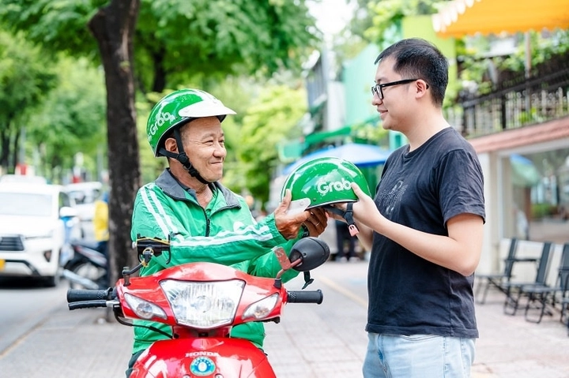

Thị trường lao động tự do tại Việt Nam – Xu hướng nghề nghiệp trong thời đại số
Trong vài năm trở lại đây, Việt Nam chứng kiến sự thay đổi sâu sắc trong cấu trúc thị trường lao động. Những hình thức làm việc truyền thống — gắn bó toàn thời gian tại văn phòng, với hợp đồng ổn định — đang dần được thay thế bởi mô hình linh hoạt hơn: “lao động tự do” hay còn gọi là Gig Economy.
Sự phát triển của các nền tảng trực tuyến như Grab, ShopeeFood, Be, Freelancer Việt, Upwork… cùng quá trình chuyển đổi số và đại dịch COVID-19 đã tạo cú hích mạnh mẽ khiến ngày càng nhiều người Việt chọn con đường làm việc tự do.
1. Giới thiệu về thị trường lao động tự do tại Việt Nam
Gig economy không chỉ mang lại cơ hội kiếm sống cho hàng triệu người, mà còn phản ánh sự dịch chuyển của nền kinh tế Việt Nam sang mô hình linh hoạt, số hóa và toàn cầu hóa – nơi mỗi cá nhân có thể trở thành “doanh nghiệp một người”.
Nếu như trước đây, việc làm thường gắn liền với khái niệm “biên chế”, hợp đồng dài hạn, và môi trường văn phòng cố định, thì ngày nay, hàng trăm nghìn người Việt đang lựa chọn trở thành “người lao động độc lập”, làm việc theo từng dự án hoặc nhiệm vụ ngắn hạn.
Ban đầu, khái niệm lao động tự do chỉ gói gọn trong những nghề có tính phổ biến cao như tài xế công nghệ, giao hàng, thiết kế đồ họa, viết nội dung quảng cáo hoặc các công việc hỗ trợ kỹ thuật đơn giản.
Tuy nhiên, cùng với quá trình chuyển đổi số toàn diện của nền kinh tế Việt Nam, gig economy đã mở rộng sang các lĩnh vực đòi hỏi chuyên môn cao như lập trình phần mềm, phân tích dữ liệu, marketing kỹ thuật số, giảng dạy trực tuyến và tư vấn kinh doanh.
Một đặc điểm nổi bật của xu hướng này là tính phổ cập địa lý. Không chỉ giới hạn ở các đô thị lớn như Hà Nội, TP. Hồ Chí Minh hay Đà Nẵng, gig economy đang lan tỏa đến cả các tỉnh, vùng ven và khu vực nông thôn. Với chỉ một chiếc laptop và kết nối Internet ổn định, người lao động ở bất cứ đâu cũng có thể tiếp cận khách hàng trong và ngoài nước, tham gia các dự án toàn cầu mà không cần di chuyển. Điều này đang góp phần thu hẹp khoảng cách cơ hội giữa thành thị và nông thôn – một bước tiến lớn đối với nền kinh tế số Việt Nam.
Sự phổ biến nhanh chóng của gig economy phản ánh nhu cầu ngày càng cao về tính linh hoạt trong công việc. Trong bối cảnh xã hội hiện đại, thế hệ trẻ Việt Nam không còn coi “làm việc ổn định” là mục tiêu duy nhất, mà thay vào đó, họ tìm kiếm sự tự do, sáng tạo và tự chủ tài chính. Gig economy cho phép họ kiểm soát thời gian, lựa chọn công việc phù hợp với sở thích và năng lực, đồng thời tiếp cận những cơ hội thu nhập mới trong môi trường toàn cầu hóa.
Như vậy, thị trường lao động tự do tại Việt Nam không chỉ là xu hướng tất yếu của thời đại công nghệ, mà còn là tín hiệu cho thấy sự thay đổi sâu sắc trong tư duy nghề nghiệp và cấu trúc xã hội. Nó đặt ra cả cơ hội và thách thức: mở rộng phạm vi việc làm, nhưng đồng thời đòi hỏi cơ chế pháp lý và chính sách bảo vệ người lao động tương xứng với sự phát triển nhanh chóng của nền kinh tế số.
2. Nguyên nhân thúc đẩy sự phát triển của thị trường lao động tự do
Sự bùng nổ của gig economy tại Việt Nam không phải là ngẫu nhiên, mà là kết quả tổng hòa của nhiều yếu tố kinh tế – xã hội và công nghệ.
Trước hết, chuyển đổi số đóng vai trò trọng yếu. Sự phổ cập internet tốc độ cao, cùng sự phát triển mạnh mẽ của các nền tảng trực tuyến như Grab, Shopee, Fiverr, hay Upwork, đã tạo nên hạ tầng số giúp kết nối nhanh chóng giữa người lao động và doanh nghiệp. Công nghệ đã phá vỡ giới hạn về không gian làm việc: một freelancer ở Đà Nẵng có thể thực hiện dự án cho khách hàng ở Mỹ hoặc Nhật Bản chỉ qua vài cú nhấp chuột.
Thứ hai, tư duy nghề nghiệp của người trẻ Việt Nam đang thay đổi. Thế hệ Gen Z không còn xem “công việc ổn định” là đích đến duy nhất. Họ đề cao tự do, sáng tạo, và mong muốn kiểm soát thời gian của bản thân. Làm việc tự do cho phép họ lựa chọn dự án phù hợp với đam mê, đồng thời tránh sự gò bó của mô hình văn phòng truyền thống.
Cuối cùng, yếu tố kinh tế và khủng hoảng toàn cầu cũng góp phần quan trọng. Đại dịch COVID-19 buộc nhiều doanh nghiệp cắt giảm nhân sự, trong khi nhu cầu dịch vụ linh hoạt tăng cao. Nhiều người mất việc đã chuyển sang làm freelancer, mở đầu cho làn sóng gig worker mới. Chính từ cú hích này, mô hình lao động tự do đã trở thành một phần cấu trúc không thể thiếu trong nền kinh tế hiện đại Việt Nam.
3. Các lĩnh vực phát triển mạnh trong gig economy Việt Nam
Tại Việt Nam, gig economy không chỉ tập trung vào các nghề truyền thống như giao hàng hay lái xe công nghệ, mà đã mở rộng đáng kể sang các ngành nghề tri thức và sáng tạo.
Ở nhóm lao động phổ thông, các nền tảng như Grab, Be, Gojek, Baemin… là biểu tượng của mô hình gig hiện đại. Hàng trăm nghìn tài xế tham gia hệ thống này, đóng vai trò quan trọng trong chuỗi dịch vụ đô thị.
Còn ở nhóm lao động trí thức, lĩnh vực công nghệ thông tin, thiết kế, marketing kỹ thuật số và biên dịch phát triển mạnh mẽ. Các freelancer có thể làm việc với khách hàng quốc tế thông qua nền tảng như Freelancer.com, Upwork hay TopCV Freelance.
Đặc biệt, xu hướng làm việc từ xa (remote work) đang khiến nhiều doanh nghiệp trong nước sử dụng freelancer cho các dự án ngắn hạn nhằm tối ưu chi phí.
Một mảng khác đang tăng tốc là giáo dục và huấn luyện trực tuyến – nơi hàng nghìn giảng viên, chuyên gia độc lập cung cấp khóa học qua Zoom, YouTube, hay các nền tảng e-learning Việt Nam như Kyna và Edumall. Điều này cho thấy gig economy không còn bó hẹp trong khu vực dịch vụ mà đã mở rộng thành một hệ sinh thái nghề nghiệp thực thụ.
4. Ưu điểm và cơ hội mà thị trường này mang lại
Làm việc tự do mở ra nhiều cơ hội chưa từng có trong lịch sử lao động Việt Nam.
Trước hết là sự linh hoạt tuyệt đối – người lao động có thể chọn thời gian, địa điểm, và loại dự án mình muốn tham gia. Điều này đặc biệt hấp dẫn với những người trẻ muốn vừa làm vừa học, hoặc với những ai cần cân bằng giữa công việc và cuộc sống gia đình.
Thứ hai, gig economy tạo điều kiện cho sự phát triển cá nhân và năng lực chuyên môn. Freelancer phải không ngừng trau dồi kỹ năng, nâng cao hiệu quả và xây dựng thương hiệu cá nhân để duy trì sức cạnh tranh. Đây chính là động lực thúc đẩy học tập suốt đời (lifelong learning) – một yếu tố then chốt trong xã hội tri thức hiện đại.

Đáng chú ý, gig economy còn giúp phân bổ lại cơ hội việc làm. Người dân ở vùng nông thôn có thể tiếp cận công việc toàn cầu, miễn là họ có kỹ năng và kết nối internet. Điều này giúp giảm bất bình đẳng vùng miền và góp phần phát triển kinh tế địa phương.
Về phía doanh nghiệp, gig economy mang lại lợi thế tối ưu chi phí, giảm gánh nặng nhân sự cố định, và tăng khả năng mở rộng linh hoạt cho từng dự án. Nhờ vậy, mô hình này đang được nhiều doanh nghiệp Việt Nam coi như một chiến lược phát triển nguồn lực bền vững.
5. Những thách thức và mặt trái của lao động tự do
Dù mang nhiều tiềm năng, gig economy tại Việt Nam vẫn đang đối mặt với hàng loạt vấn đề.
Thách thức lớn nhất là thiếu khung pháp lý bảo vệ người lao động. Freelancer không có hợp đồng lao động cố định, không được đóng bảo hiểm xã hội, bảo hiểm y tế, và không có chính sách phúc lợi khi gặp rủi ro. Việc tranh chấp giữa freelancer và khách hàng, nhất là trên nền tảng quốc tế, thường khó giải quyết do thiếu quy chuẩn pháp lý rõ ràng.
Một rủi ro khác là thu nhập không ổn định. Khác với công việc truyền thống có mức lương cố định hàng tháng, người làm tự do phụ thuộc hoàn toàn vào số lượng dự án và đánh giá của khách hàng. Điều này tạo áp lực tâm lý, khiến họ phải làm việc nhiều giờ hơn để duy trì mức thu nhập mong muốn.
Ngoài ra, cạnh tranh khốc liệt và xu hướng “đấu giá giá rẻ” trên các nền tảng freelance toàn cầu cũng khiến nhiều lao động Việt Nam phải hạ giá dịch vụ để có được việc làm, ảnh hưởng đến chất lượng nghề nghiệp dài hạn.
Từ góc nhìn xã hội, gig economy còn đặt ra câu hỏi lớn về an ninh việc làm và sự gắn kết cộng đồng lao động – hai yếu tố nền tảng trong mô hình kinh tế truyền thống mà Việt Nam cần xem xét kỹ lưỡng để không đánh mất trong quá trình chuyển đổi số.
6. Ảnh hưởng của công nghệ số và nền tảng trực tuyến
Công nghệ số chính là “xương sống” của gig economy hiện đại. Nếu không có Internet, điện thoại thông minh và trí tuệ nhân tạo (AI), mô hình này sẽ khó có thể hình thành và phát triển.
Tại Việt Nam, sự phổ cập của smartphone và 4G/5G đã đưa gig economy đến mọi tầng lớp xã hội. Các nền tảng số như Grab, Be, ShopeeFood, hay FreelancerViet trở thành cầu nối giữa người cung cấp và người sử dụng dịch vụ, tạo ra hàng triệu giao dịch mỗi ngày.
Bên cạnh đó, sự phát triển của các công cụ hỗ trợ làm việc từ xa như Google Workspace, Notion, Trello, Slack, hay Zoom giúp freelancer Việt Nam cộng tác hiệu quả với đối tác quốc tế. Công nghệ cũng đang thay đổi cách đánh giá năng suất – thay vì “làm đủ giờ”, gig worker được đánh giá qua kết quả và chất lượng công việc.
Sự xuất hiện của AI và tự động hóa cũng mở ra một chương mới. Nhiều freelancer tận dụng AI trong viết nội dung, dịch thuật, thiết kế hoặc phân tích dữ liệu, giúp tăng hiệu suất gấp nhiều lần. Tuy nhiên, điều này cũng khiến thị trường lao động trở nên cạnh tranh hơn, buộc người làm tự do phải liên tục thích ứng và nâng cấp kỹ năng công nghệ của mình.
7. Chính sách và khung pháp lý đối với lao động tự do tại Việt Nam
Một trong những vấn đề cấp thiết nhất của gig economy hiện nay là chính sách quản lý và bảo vệ quyền lợi cho người lao động. Tại Việt Nam, phần lớn freelancer và người làm việc qua nền tảng vẫn bị xem là “lao động phi chính thức”, không thuộc phạm vi điều chỉnh rõ ràng của Bộ luật Lao động.
Chính phủ Việt Nam trong những năm gần đây đã bắt đầu nhận thấy tầm quan trọng của nhóm này. Một số đề án về “chuyển đổi số quốc gia”, “phát triển kinh tế số” và “thị trường lao động linh hoạt” đã được đưa vào chiến lược 2025–2030, nhằm nghiên cứu cơ chế thu thuế, bảo hiểm và hợp đồng điện tử cho gig worker.
Tuy vậy, thực tế vẫn còn khoảng trống lớn về mặt pháp lý. Người lao động tự do hiện chưa được bảo đảm an sinh xã hội, chế độ hưu trí, hay quyền lợi khi xảy ra tranh chấp hợp đồng. Để gig economy phát triển bền vững, Việt Nam cần một hệ thống pháp luật “lai” – vừa bảo vệ quyền lợi cơ bản, vừa duy trì sự linh hoạt vốn là linh hồn của mô hình này.
8. Vai trò của giáo dục và đào tạo kỹ năng số
Giáo dục chính là chìa khóa giúp người lao động Việt Nam tham gia hiệu quả vào gig economy.
Trong kỷ nguyên số, kỹ năng không chỉ giới hạn ở chuyên môn mà còn bao gồm năng lực mềm như quản lý thời gian, giao tiếp đa văn hóa, tự học, và sử dụng công nghệ số.
Nhiều trường đại học, trung tâm đào tạo, và các nền tảng học trực tuyến ở Việt Nam đã bắt đầu cung cấp khóa học dành riêng cho freelancer, từ kỹ năng viết proposal, quản lý dự án, đến marketing cá nhân. Song, phần lớn người lao động tự do vẫn phải tự học qua trải nghiệm thực tế, điều này khiến sự chênh lệch về trình độ giữa các nhóm gig worker trở nên rõ rệt.
Về phía Nhà nước, việc khuyến khích chương trình đào tạo kỹ năng số quốc gia, kết hợp với các doanh nghiệp công nghệ, sẽ là hướng đi quan trọng để giúp hàng triệu người lao động Việt Nam thích ứng với thị trường toàn cầu hóa. Nếu không đầu tư sớm vào giáo dục kỹ năng số, Việt Nam có nguy cơ chỉ đứng ở nhóm gig worker “thấp tầng” — chủ yếu làm công việc lặp lại, giá rẻ, và ít giá trị sáng tạo.
9. Xu hướng tương lai và cơ hội phát triển đến năm 2030
Nhìn về tương lai, gig economy Việt Nam đang trên đà bùng nổ mạnh mẽ trong thập kỷ tới. Theo nhiều dự báo, số lượng người làm việc tự do có thể chiếm 20–25% lực lượng lao động cả nước vào năm 2030, đặc biệt trong các ngành công nghệ thông tin, truyền thông, và dịch vụ sáng tạo.
Sự hội nhập quốc tế sâu rộng cũng mang lại cơ hội toàn cầu hóa nghề nghiệp: freelancer Việt có thể tham gia vào các dự án ở Nhật, Mỹ, hay châu Âu mà không cần rời khỏi quê nhà. Bên cạnh đó, sự phát triển của công nghệ blockchain và hợp đồng thông minh (smart contract) hứa hẹn sẽ giúp giải quyết các vấn đề như bảo mật thanh toán, minh bạch giao dịch và xác thực danh tiếng trong môi trường làm việc số.
Ngoài ra, gig economy còn là động lực cho đổi mới mô hình doanh nghiệp. Thay vì tuyển dụng dài hạn, các công ty Việt Nam có thể áp dụng mô hình hybrid – kết hợp nhân sự cố định và lực lượng gig chuyên biệt, giúp tiết kiệm chi phí, tăng tốc độ đổi mới và linh hoạt hơn trước biến động thị trường.
10. Kết luận: Từ xu hướng linh hoạt đến tương lai bền vững
Thị trường lao động tự do không còn là xu hướng nhất thời, mà đang trở thành một trụ cột mới của nền kinh tế Việt Nam hiện đại. Gig economy đã và đang định hình lại cách con người nhìn nhận về công việc, thu nhập, và giá trị lao động.
Tuy nhiên, để mô hình này phát triển bền vững, Việt Nam cần một chiến lược dài hạn: xây dựng khung pháp lý linh hoạt, đầu tư mạnh mẽ vào giáo dục kỹ năng số, và khuyến khích doanh nghiệp chuyển đổi sang mô hình nhân lực mở (open talent model).
Nếu được định hướng đúng đắn, gig economy không chỉ tạo việc làm cho hàng triệu người Việt mà còn giúp đất nước vươn lên vị thế trung tâm lao động sáng tạo của khu vực Đông Nam Á, nơi người lao động được tự do lựa chọn, phát huy tối đa năng lực và đóng góp cho nền kinh tế tri thức toàn cầu.